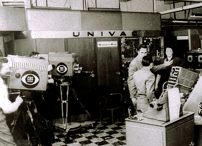

The First Genration of Computers started in 1946. The makers of these
computers used thousands of vacuum tubes, which were often huge,taking up
the space of entire room.
Features of First Genration Computers:
They used Vacuum tube technology.
They used Machine language.
The size was very big.
They were very expensive.
They produced a lot of heat.
The operating speed was very slow.
They were not much reliable.
ENIAC & UNIVAC are the example of first genration computers.

UNIVACVacuum Tube